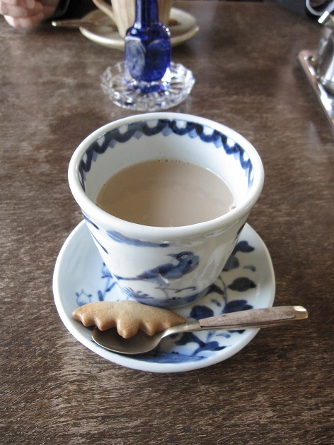
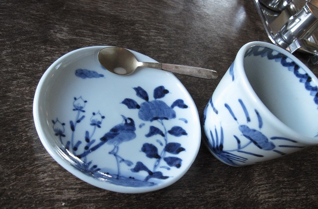

首頁 │ 三原典 │ 演講稿 │ 教理 │ 文章 │ 學習資源
我的愚昧 謝匡宇  昨最近在找工作。日商的人力公司建議我，先接一些part time的工作，累積一些資歷以後比較有機會找到正職。 想一想這個方式也不錯，既然需要累積帳面的經歷才有機會，先出去見見識面也很好。 這幾年當然也會想，大學研究所同學大家都買房買車了，自己為什麼要在日本待這麼久。但9年的旅日生活我覺得非常值得，回來找工作碰到一些阻礙也是理所當然。過去這幾年的時間沒有浪費，只是這些經歷對找工作沒有直接幫助罷了，如此而已。 我父親大學念教育系，一直到退休，有40年的時間都在研究如何施教。但現在專心學佛，完全不碰教育的書籍。 我母親到前一陣子都還很喜歡寫布落格。出門一定拿照相機猛拍，一天發3篇文章也不奇怪。但最近幾天才發一篇，一整天沒用電腦也不會不舒服。 我姐姐幾年前很愛拍照，有一台老式的拍立得。這幾年拍照的熱情減退，前陣子相機不用了，我把相機拿去送給一位設計師朋友。 人的喜好，有很大的程度來說是一種氣氛下的產物。就是一連串的事情組合起來，在某個時間點某個情況下，喜歡做某些事情。在那個當下大部分的時候我們只是跟隨著自己的喜好，並沒有自覺這些喜好是出自哪種背景條件。只是有時候時間過後回頭一看，才在更深的地方看見那件事情在自己心中的意義。 如果死後的世界真的有個審判。神問：你年輕的時候為什麼花這麼多時間做一件你後半輩子完全不會做的事？你為什麼花這麼多時間工作，存一堆帶不走的錢還賠掉健康？為什麼說要愛護動物，卻又拿電蚊拍把蚊子打死？為什麼蒐集一堆模型組裝，卻不肯跟鄰居打聲招呼？ 我會回答： 「祢為我設想的一切，以及祢的教導，我雖然沒有無時無刻都放在心裡，也無法完全遵守，但我始終感念在心。我的成熟懂事，與祢的期待相比輕如鴻毛，微不足道。但在我還來不及報答足夠的恩惠以前，死亡便已經來臨。 我的一生中做過很多傻事，在祢的眼中如此，在眾人的眼中也是如此。 但是我知道一個彌補愚昧的方法。就是做每件事情，我都盡可能符合祢的教導，對祢給予的一切心懷感謝，然後我都盡可能樂在其中。因為樂在其中，每次回頭的時候我都愉快地嘲笑自己過去的愚蠢。因此，現在這一刻必須面對的任何結果，我的欣然接受。」  |